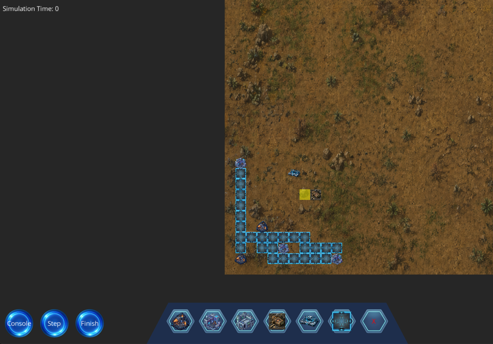
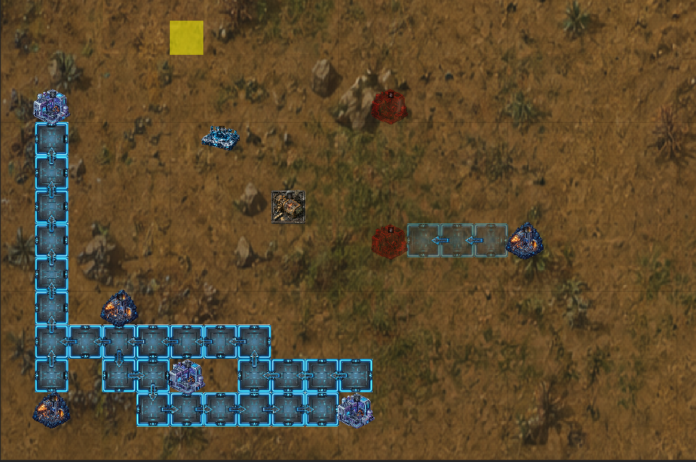

Selected Work
Projects
A collection of software, systems, and engineering projects I have built or contributed to.
Java Simulation System
GUI-Based Factory Simulation System
Mar. 2026 - May 2026
Java · Gradle · JUnit 5 · Mockito · Git · CI/CD · GUI · Client-Server Architecture
Overview
A Factorio-like Java factory simulation system with GUI and client/server support. The system enables real-time building construction, road placement, resource production, delivery routing, drone transport, waste handling, and save/load functionality.
Key Features
Factory Simulation
Supports building construction, resource production, road networks, and delivery routing.
Client/Server Support
Synchronizes simulation state between backend logic and GUI clients in real time.
Save and Load
Uses DTO-based serialization to persist and restore complex simulation states.
Testing
Includes unit and integration tests with JUnit 5 and Mockito, achieving 90%+ coverage.
Technical Design
The system uses object-oriented design, DTO-based serialization, event-driven communication, command patterns, service-layer architecture, and client/server state synchronization.
My Contributions
- Implemented modular simulation features using object-oriented design and service-layer architecture.
- Developed DTO-based serialization for save/load workflows and client/server synchronization.
- Wrote tests for simulation services, validators, DTO conversions, construction logic, and edge cases.
- Contributed to Git workflow, pull requests, code reviews, CI/CD validation, Javadoc, and UML design.
Technical Challenges
Complex State Management
The simulation needed to coordinate buildings, roads, inventories, delivery requests, drones, and waste across real-time updates.
Reliable Persistence
Save/load required careful DTO conversion and restoration because many simulation objects reference each other.
Screenshots


Storage Systems
SSD + S3 Hybrid Storage Architecture
Oct. 2022 – Jan. 2023
Go · FUSE · Linux · AWS S3 · MinIO · Block Cache · Asynchronous Write-Back · LRU Eviction
Overview
SSD + S3 Hybrid Storage Architecture is a FUSE-based storage system written in Go. It exposes AWS-compatible object storage as a local file system while using local SSD storage as a block-level cache.
The system allows users to read and write remote S3 objects through normal file system operations. Frequently accessed blocks are cached locally, modified blocks are tracked as dirty, and asynchronous write-back workers flush updates to remote object storage.
Key Features
FUSE File System Interface
Mounted remote object storage as a local file system, allowing users to interact with S3 objects through standard Linux file operations.
SSD-Backed Block Cache
Implemented block-level caching so repeated reads can be served from local SSD instead of repeatedly fetching data from remote object storage.
Asynchronous Write-Back
Tracked dirty blocks and flushed modified data back to S3 asynchronously to reduce blocking on write operations.
Capacity-Based Eviction
Added cache capacity management and LRU-style eviction to keep local cache usage within configured limits.
Technical Design
The system is built around a local block cache layered between the FUSE file system interface and remote AWS-compatible object storage. Read operations first check whether the requested block exists in the local cache. On a cache miss, the system fetches the corresponding byte range from S3-compatible storage and persists it locally.
Write operations update local cache blocks and mark them as dirty. Dirty-block metadata is persisted alongside cached block files, allowing the system to track which blocks need to be written back to remote object storage. Background write-back workers then flush modified blocks asynchronously.
To prevent unbounded local disk usage, the cache manager maintains capacity accounting and evicts clean blocks based on access history. This design improves repeated large-file workload performance while preserving the ability to access objects through a normal file system path.
My Contributions
- Built a FUSE-based hybrid storage system that exposes AWS-compatible object storage as a local Linux file system.
- Implemented SSD-backed block-level caching, cache metadata persistence, and dirty-block tracking.
- Developed asynchronous write-back logic to flush modified blocks from local cache to remote object storage.
- Added cache capacity management and LRU-style eviction for local SSD cache control.
- Debugged cache accounting and eviction bugs using logs, workload experiments, and Linux command-line profiling tools.
- Improved reliability and performance stability for repeated large-file read/write workloads by fixing cache replacement and write-back edge cases.
Technical Challenges
Cache Consistency
The system needed to keep local cached blocks, dirty metadata, and remote S3 objects consistent across reads, writes, flushes, and remounts.
Write-Back Edge Cases
Modified blocks had to be tracked and reassembled correctly before being flushed back to object storage, especially for repeated writes to large files.
Capacity Accounting
Cache size accounting needed to remain accurate when blocks were inserted, replaced, evicted, or flushed by background workers.
Eviction Stability
LRU-style eviction required careful handling to avoid removing protected or recently used blocks during active read/write workloads.
Screenshots


What I Learned
This project strengthened my understanding of Linux file systems, FUSE, object storage, block-level caching, asynchronous write-back, cache eviction, and performance debugging. It also gave me hands-on experience building a storage system that connects low-level file system operations with cloud-style remote storage.
Operating Systems
Read-Copy-Update in xv6 – OS Kernel Project
Sept. 2025 – Nov. 2025
C · xv6 · Synchronization · Concurrency · Kernel Programming · Performance Debugging
Overview
Read-Copy-Update in xv6 is an operating systems kernel project that implements RCU-style synchronization in the xv6 teaching kernel. The goal was to improve scalability for read-heavy workloads by allowing readers to proceed with minimal synchronization overhead while writers update shared data safely.
The project adapts concepts from Linux Read-Copy-Update methodology into a simpler teaching OS environment. It focuses on per-CPU reader tracking, grace-period detection, deferred memory reclamation, and correctness under concurrent kernel access.
Key Features
RCU-Style Synchronization
Implemented Read-Copy-Update synchronization to reduce contention for read-heavy kernel workloads.
Per-CPU Reader Tracking
Designed per-CPU reader state tracking so the kernel can determine whether active readers are still accessing old data versions.
Grace-Period Detection
Implemented logic to detect when all pre-existing readers have exited their read-side critical sections.
Deferred Reclamation
Added deferred memory reclamation so updated or removed data is freed only after it is safe to do so.
Technical Design
Traditional locking can limit scalability when many kernel threads frequently read shared data. This project uses an RCU-style approach: readers enter lightweight read-side critical sections, writers publish updated data, and old data is reclaimed only after a grace period has passed.
The implementation tracks reader activity on a per-CPU basis. When a writer removes or replaces shared data, the old version is not immediately freed. Instead, it is added to a deferred reclamation path and released only after the kernel verifies that all readers that could have observed the old version have completed.
This design required careful reasoning about concurrent access, memory lifetime, CPU-local state, and kernel execution order. Debugging was performed using tracing, assertions, and performance profiling to validate both correctness and scalability behavior.
My Contributions
- Implemented Read-Copy-Update synchronization inside the xv6 kernel for read-heavy workloads.
- Adapted core ideas from Linux RCU methodology into a simplified teaching OS kernel.
- Designed per-CPU reader tracking to monitor active read-side critical sections.
- Implemented grace-period detection to identify when old data versions can be safely reclaimed.
- Added deferred memory reclamation to preserve correctness under concurrent access.
- Debugged kernel-level synchronization issues using tracing, assertions, and performance profiling.
Technical Challenges
Kernel Concurrency Correctness
The implementation needed to ensure that readers could safely access shared data while writers updated or removed old versions.
Grace-Period Reasoning
A key challenge was detecting when all readers that might have seen an old data version had exited their read-side critical sections.
Memory Lifetime Management
Data could not be freed immediately after replacement, so deferred reclamation was required to avoid use-after-free bugs.
Low-Level Debugging
Debugging required kernel-level tracing, assertions, and profiling because synchronization bugs were timing-sensitive and difficult to reproduce.
Screenshots


What I Learned
This project strengthened my understanding of kernel-level synchronization, concurrent memory access, CPU-local state, deferred reclamation, and performance debugging. It also helped me understand how production operating system concepts such as Linux RCU can be simplified and adapted to a teaching kernel like xv6.
Computer Architecture
Parallelism in Pipelined CPU Based on RISC-V
Jan. 2024 – Mar. 2024
Verilog · RISC-V · CPU Microarchitecture · RTL Simulation · Pipeline Control · Branch Prediction
Overview
Parallelism in Pipelined CPU Based on RISC-V is a computer architecture project focused on designing and implementing a 5-stage pipelined RISC-V processor in Verilog. The processor supports the classic instruction fetch, decode, execute, memory access, and write-back stages.
The project explores how instruction-level parallelism is achieved in a pipelined CPU and how control logic is used to handle data hazards, control hazards, branch behavior, and interrupt support.
Key Features
5-Stage RISC-V Pipeline
Implemented instruction fetch, decode, execute, memory access, and write-back stages in Verilog.
Pipeline Hazard Handling
Designed control logic for data hazards and control hazards, including forwarding, stalling, and pipeline redirection.
Dynamic Branch Prediction
Integrated BTB, PHT, and GHR-based branch prediction to reduce control hazard penalties.
RTL Verification
Developed RTL testbenches and used simulation and waveform debugging to validate pipeline behavior and instruction execution.
Technical Design
The processor follows a standard 5-stage pipelined microarchitecture. Instructions flow through the fetch, decode, execute, memory, and write-back stages, allowing multiple instructions to be processed concurrently at different pipeline stages.
To preserve correctness under pipeline parallelism, the design includes hazard detection and control logic. Data hazards are handled through forwarding and stalling, while control hazards are handled through branch redirection and pipeline control mechanisms.
The processor also integrates dynamic branch prediction using a Branch Target Buffer, Pattern History Table, and Global History Register. This allowed the project to analyze how branch prediction affects control hazard penalties and overall pipeline execution behavior.
My Contributions
- Designed and implemented a 5-stage pipelined RISC-V processor in Verilog.
- Implemented instruction fetch, decode, execute, memory access, and write-back pipeline stages.
- Designed pipeline control logic for data hazards, control hazards, forwarding, stalling, branch redirection, branch handling, and interrupt support.
- Integrated BTB, PHT, and GHR-based dynamic branch prediction.
- Developed RTL testbenches to validate instruction execution, pipeline behavior, branch prediction correctness, and control flow behavior.
- Used simulation and waveform debugging to inspect pipeline state, diagnose control logic issues, and verify execution correctness.
Technical Challenges
Pipeline Correctness
The processor needed to preserve correct instruction execution while multiple instructions were active in different pipeline stages.
Hazard Detection
Data and control hazards required careful forwarding, stalling, and pipeline redirection logic to avoid incorrect register or memory updates.
Branch Prediction Behavior
BTB, PHT, and GHR logic had to be coordinated with branch resolution to evaluate prediction correctness and reduce control hazard penalties.
Waveform Debugging
Debugging required inspecting RTL waveforms across pipeline stages to track instruction flow, control signals, stalls, redirects, and branch outcomes.
Screenshots


What I Learned
This project strengthened my understanding of CPU microarchitecture, pipelined execution, instruction-level parallelism, RTL design, hazard handling, dynamic branch prediction, and waveform-based debugging. It also helped me connect computer architecture concepts with concrete Verilog implementation and simulation workflows.
Computer Systems
Computer System from Scratch / NEMU Hardware Emulator
Course Project / Systems Programming Practice
C · NEMU · RISC-V/x86-style ISA Emulation · Abstract Machine · Nanos-lite · Navy-apps · Linux · GDB · Makefile · Systems Debugging
Overview
Computer System from Scratch is a systems programming project based on the NEMU hardware emulator and the NJU PA learning framework. The project builds and connects multiple layers of a computer system, including instruction execution, runtime support, lightweight operating system services, and user-level application workloads.
Instead of treating the CPU, runtime, operating system, and applications as isolated modules, this project focuses on understanding how these layers interact. The final system can execute programs on top of an emulated machine through a complete software stack.
Key Features
Hardware Emulator
Implemented and extended NEMU-style instruction execution, CPU state updates, memory access, and program execution control.
Runtime Support
Connected the emulator with an Abstract Machine runtime layer that provides hardware abstraction and basic execution support.
Lightweight OS Services
Integrated Nanos-lite operating system services, including program loading, basic system calls, and runtime execution support.
User-Level Workloads
Ran Navy-apps workloads on top of the stack to validate instruction execution, OS services, and application-level behavior.
Technical Design
The project is organized as a layered computer system. At the lowest level, the NEMU emulator models the behavior of a target machine by maintaining CPU state, fetching and executing instructions, accessing memory, and controlling program execution.
Above the emulator, the Abstract Machine layer provides a hardware abstraction interface. This layer connects low-level machine behavior with higher-level runtime services, making it possible to run operating system components and application workloads on the emulated platform.
Nanos-lite provides lightweight operating system functionality, including program loading and basic system call handling. Navy-apps then serve as user-level workloads to test whether the emulator, runtime, and OS layers work together correctly.
My Contributions
- Implemented and extended a full-system emulation stack based on the NEMU hardware emulator.
- Developed instruction execution logic, CPU state updates, memory access paths, and debugging support in C.
- Connected the emulator with the Abstract Machine runtime layer to support program execution on the simulated platform.
- Integrated Nanos-lite operating system services, including program loading and basic syscall handling.
- Ran Navy-apps workloads to validate the behavior of the emulator, runtime, and OS stack.
- Used logs, assertions, GDB, Makefile workflows, and command-line debugging to diagnose instruction execution and system integration issues.
Technical Challenges
Instruction-Level Correctness
The emulator needed to correctly update CPU state, decode instructions, access memory, and preserve architectural behavior across different program executions.
Cross-Layer Integration
Bugs could appear at the emulator, runtime, OS, or application layer, so debugging required reasoning across the full system stack rather than only one module.
System Call Behavior
User programs depended on correct OS service behavior, making syscall handling and program loading important for end-to-end execution.
Low-Level Debugging
Debugging required tracing instruction execution, inspecting memory and registers, using assertions, and comparing expected behavior with actual runtime state.
Screenshots


What I Learned
This project strengthened my understanding of how a computer system works across multiple layers, from instruction execution and memory access to runtime support, system calls, operating system services, and user-level workloads. It also helped me build stronger debugging habits for low-level systems, including tracing, assertions, register inspection, and cross-layer reasoning.